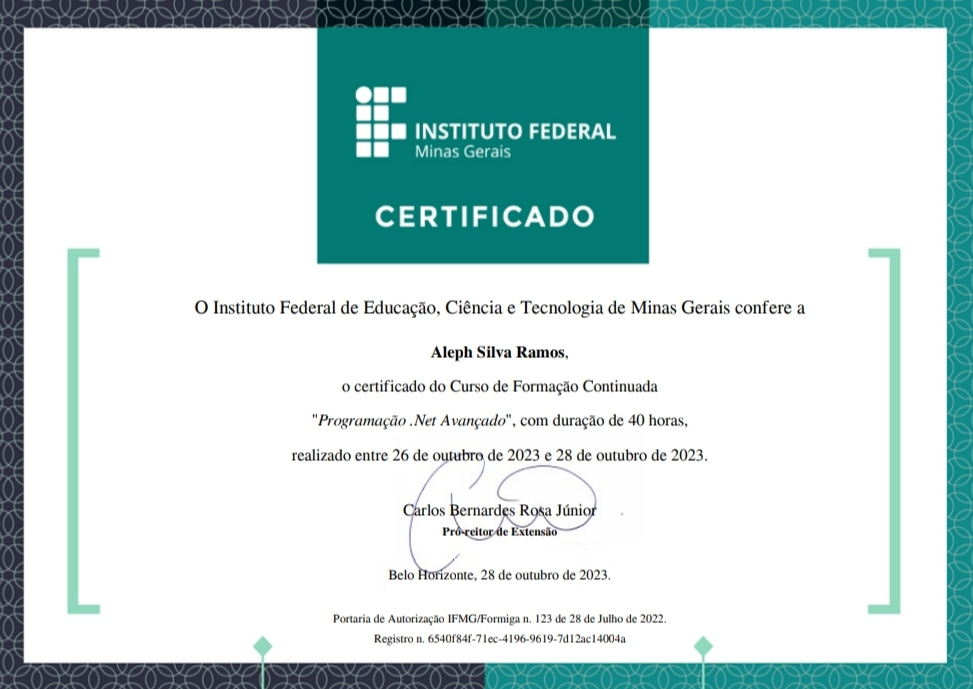
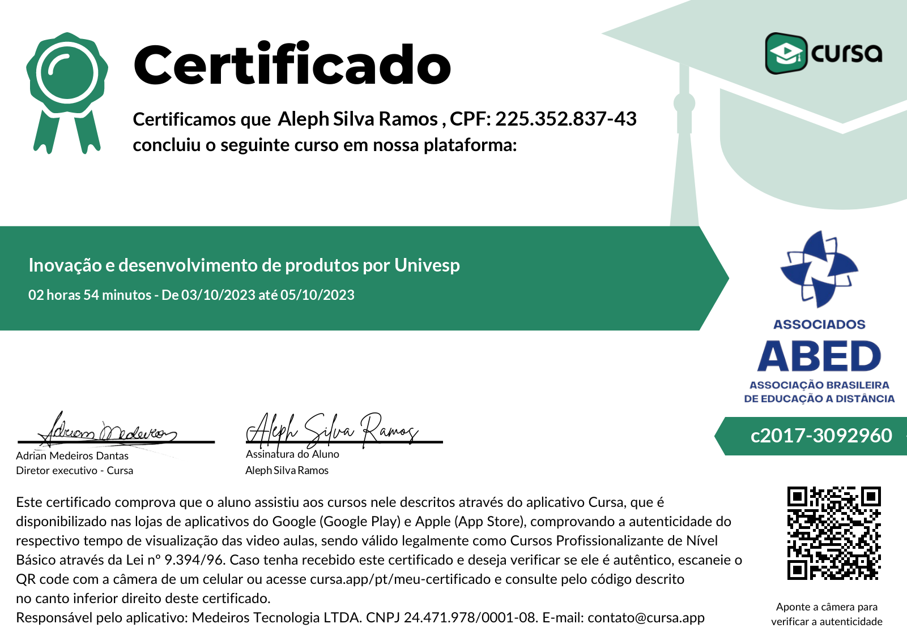

-
2023
JavaScript
Esse curso foi concluido de forma online pela plataforma "MOODLE" do Instituto Federal de Educação, Ciência e Tecnologia do Rio Grande do Sul - IFRS, pela Professora Júlia Marques C. da Silva. Com uma carga horária de 30h.
Ementa
➛ 1.1 Introdução a linguagem JavaScript
➛ 1.2 Exemplo: meu primeiro código JS
➛ 1.3 Operações aritméticas
➛ 1.4 Média de valores
➛ 1.5 Confirmação
➛ 1.6 Laços de repetição
➛ 1.7 Para até
➛ 2.1 Eventos
➛ 2.2 onLoad
➛ 2.3 onClick
➛ 2.4 Outros eventos de entrada
➛ 2.5 Eventos do mouse
➛ 2.6 Validação de formulários
➛ 2.7 Exemplo de cálculo do IMC
➛ 2.8 Exemplo de transformação de letra
➛ 2.9 Introdução a bibliotecas -
2023
Programador Web em Tecnologias Front-end
Esse curso foi concluido de forma online pela plataforma "+IFMG" do Instituto Federal de Educação, Ciência e Tecnologia de Minas Gerais - IFMG, pela Professora Danielle Costa de Oliveira. Com uma carga horária de 30h.
Ementa
➛ 1.1 O que é a Internet?
➛ 1.2 Como publicar um site na Internet
➛ 1.3 Aplicações front-end e back-end
➛ 1.4 Design para a web
➛ 1.5 Critérios de usabilidade
➛ 1.6 Compatibilidade dos navegadores
➛ 1.7 Ferramenta de desenvolvimento
➛ 2.1 Introdução ao HTML
➛ 2.2 Estrutura da página
➛ 2.3 Formatação de texto
➛ 2.4 Listas
➛ 2.5 Hyperlinks
➛ 2.6 Imagens
➛ 2.7 Tabelas
➛ 2.8 Formulários
➛ 3.1 Introdução ao CSS
➛ 3.2 Como criar estilos
➛ 3.3 Tipos de folhas de estilo
➛ 3.4 Modelo de caixa CSS
➛ 3.5 Validação CSS
➛ 4.1 Introdução ao JavaScript
➛ 4.2 Funções
➛ 4.3 Tratamentos de eventos
➛ 4.4 Operadores
➛ 4.5 Controle de fluxo
➛ 4.6 Objetos principais
➛ 4.6.1 Janelas personalizadas
➛ 4.7 JQuery -
2023

Projeto de Sistemas Web
Esse curso foi concluido de forma online pela plataforma "MOODLE" do Instituto Federal de Educação, Ciência e Tecnologia do Rio Grande do Sul - IFRS, pelo(a) Professor(a) não especificado. Com uma carga horária de 30h.
Ementa
➛ 1.1 Introdução
➛ 1.2 Conceitos sobre projeto de sistemas Web
➛ 1.3 Importância do projeto de sistemas Web
➛ 1.4 Princípios gerais
➛ 1.5 Projeto de sistemas Web
➛ 1.6 Qualidade do projeto de sistemas Web
➛ 1.7 Projeto de sistemas e padrões de projeto
➛ 2.1 Introdução
➛ 2.2 Levantamento de requisitos
➛ 2.3 Importância dos requisitos
➛ 2.4 As especificações e análise de requisitos
➛ 3.1 Introdução
➛ 3.2 Importância da modelagem
➛ 3.3 Engenharia de requisitos
➛ 3.4 Validação dos requisitos
➛ 4.1 Metodologias
➛ 4.2 Modelo de análise
➛ 4.3 Tipos de modelos para a modelagem
-
2023 
Programção .Net Avançado
Esse curso foi concluido de forma online pela plataforma "+IFMG" do Instituto Federal de Educação, Ciência e Tecnologia de Minas Gerais - IFMG, pelo Professor Ricardo Pagoto Marinho e Bruno Ferreira. Com uma carga horária de 40h.
Ementa
➛ 1.1 Vetores - Considerações inciais
➛ 1.2 Declaração/Instanciação de vetores
➛ 1.3 Atribuição de valores e leitura de dados
➛ 1.4 Percorrendo o vetor
➛ 1.5 Descobrindo o tamanho do vetor
➛ 1.6 Exemplos
➛ 2.1 Matrizes - Considerações iniciais
➛ 2.2 Declaração/Instanciação de matrizes
➛ 2.3 Atribuição de valores e leitura de dados
➛ 2.4 Percorrendo a matriz
➛ 2.5 Descobrindo o tamanho da matriz
➛ 2.6 Exemplos
➛ 3.1 Métodos - Considerações iniciais
➛ 3.2 Declaração
➛ 3.3 Ativação e fluxo de execução
➛ 3.4 Variáveis locais
➛ 3.5 Parâmetros de entrada
➛ 3.6 Exemplos
➛ 4.1 Manipulação - Conceitos iniciais
➛ 4.2 As classes File e Directory
➛ 4.3 Gravando dados em arquivos binários
➛ 4.4 Lendo dados de arquivos binários
➛ 4.5 Lendo dados de arquivos texto
➛ 4.6 Gravando dados de arquivos texto -
2023
Python Avançado
Esse curso foi concluido de forma online pela plataforma "+IFMG" do Instituto Federal de Educação, Ciência e Tecnologia de Minas Gerais - IFMG, pelo Professor Marcos Roberto Ribeiro. Com uma carga horária de 40h.
Ementa
➛ 1.1 Introdução
➛ 1.2 Entrada e saída de dados
➛ 1.3 Operadores e expressões
➛ 1.3.1 Operadores aritméticos
➛ 1.3.2 Operadores relacionais
➛ 1.3.3 Operadores lógicos
➛ 1.4 Utilizando funções
➛ 1.4.1 Manipulação de dados textuais
➛ 1.4.2 Funções matemáticas
➛ 1.5 Estruturas de decisão
➛ 1.5.1 Estruturas de decisão simples
➛ 1.5.2 Estruturas de decisão composta
➛ 1.5.3 Estruturas de decisão alinhadas
➛ 1.5.4 Resolvendo problemas de decisão
➛ 1.6 Estruturas de repetição
➛ 1.6.1 Laço de repetição while
➛ 1.6.2 Laço de repetição for
➛ 1.6.3 Interrupção e continuação de laços
➛ 1.6.4 Resolvendo problemas de repetição
➛ 1.7 Tratamento de exceções
➛ 1.8 Modularização
➛ 1.8.1 Funções
➛ 1.8.2 Passagem de parâmetros e retorno de resultado
➛ 1.8.3 Nomes de parâmetros e parâmetros opcionais
➛ 1.8.4 Recursão
➛ 1.8.4 Módulos e bibliotecas
➛ 1.9 Decomposição de problemas
➛ 1.10 Coleções
➛ 1.10.1 Listas
➛ 1.10.2 Tuplas
➛ 1.10.3 Conjuntos
➛ 1.10.4 Dicionários
➛ 2.1 POO - Introdução
➛ 2.2 Classes e objetos
➛ 2.3 Encapsulamento
➛ 2.4 Atributos e métodos de classe
➛ 2.5 Agregação
➛ 2.6 Herança
➛ 2.7 Polimorfismo
➛ 2.8 Resolvendo problemas com POO
➛ 2.8.1 Jogo da velha
➛ 2.8.2 Caixa de supermercado
➛ 3.1 Arquivos - Introduçao
➛ 3.2 Arquivos de texto simples
➛ 3.3 Jogo da forca com arquivo
➛ 3.4 Arquivo CSV
➛ 3.5 Arquivo JSON
➛ 4.1 Interfaces gráficas - Introdução
➛ 4.2 Criação manual de interfaces
➛ 4.3 Qt Designer
➛ 4.4 Qt Designer em códigos Python
➛ 4.5 Jogo da velha com interface gráfica
➛ 4.6 Controle de gastos de veículos -
2023
Programação Web Avançado
Esse curso foi concluido de forma online pela plataforma "+IFMG" do Instituto Federal de Educação, Ciência e Tecnologia de Minas Gerais - IFMG, pelo Professor Claudio Moisés Valiense de Andrade. Com uma carga horária de 40h.
Ementa
➛ 1.1 Importanto Bootstrap
➛ 1.2 Componentes do Bootstrap
➛ 2.1 Instalação Flask
➛ 2.2 Exemplo inicial com Flask
➛ 2.3 Tratando requisições com Flask
➛ 3.1 Exemplo inicial
➛ 3.2 Tratando requisições com NodeJS
➛ 4.1 Conctando banco de dados
➛ 4.2 Executando SQL no banco de dados
-
2021
Identidade de Marca: Logotipo e Slogans
Esse curso foi concluido de forma online pela plataforma "Google Meet" no Instituto Federal de Educação, Ciência e Tecnologia do Rio de Janeiro - IFRJ - Campus Engenheiro Paulo de Frontin, pela Professora Viviam Lacerda de Souza. Com uma carga horária de 4h.
Ementa
➛ 1.1 Introdução a Logotipo
➛ 1.2 Princípios de uma logo
➛ 2.1 Slogans
➛ 2.2 Princípios de um slogan -
2023
CSS Completo
Esse curso foi concluido de forma online pela plataforma "Cursa" pelo Professor Dimitri. Com uma carga horária de 7h23min.
Ementa
➛ aula 01: O que é CSS e CSS inline
➛ aula 02: CSS interno
➛ aula 03: CSS externo
➛ aula 04: Seletores e classes
➛ aula 05: Propriedade color
➛ aula 06: Propriedade background
➛ aula 07: Propriedade border
➛ aula 08: Propriedade margin
➛ aula 09: Propriedade padding
➛ aula 10: Propriedade width e height
➛ aula 11: Propriedade Text
➛ aula 12: Propriedade Font
➛ aula 13: Estilização de links
➛ aula 14: Propriedade display
➛ aula 15: Propriedade max-width
➛ aula 16: Propriedade position
➛ aula 17: Propriedade overflow
➛ aula 18: Propriedade float
➛ aula 19: Propriedade opacity
➛ aula 20: Efeito dropdown
➛ aula 21: Especificidade CSS
➛ aula 22: Regra importante
➛ aula 23: Efeito gradiente
➛ aula 24: Propriedades text shadow e box shadow
➛ aula 25: Efeito de texto
➛ aula 26: Media queires
➛ aula 27: Flexbox
➛ aula 28: Criando um site do zero -
2023
HTML Completo
Esse curso foi concluido de forma online pela plataforma "Cursa" pelo Professor Dimitri. Com uma carga horária de 4h18min.
Ementa
➛ aula 01: Criando novo projeto
➛ aula 02: Estrutura básica
➛ aula 03: Meta tags, cabeçalho e parágrafo
➛ aula 04: Formatação de texto
➛ aula 05: Elementos de citação
➛ aula 06: Comentários
➛ aula 07: Links
➛ aula 08: Tudo sobre imagens
➛ aula 09: Tabelas
➛ aula 10: Listas
➛ aula 11: Iframes
➛ aula 12: Formulários
➛ aula 13: Áudios
➛ aula 14: Videos
➛ aula 15: Div e HTML semântico
-
2023 
Inovação e Desenvolvimento de Produtos
Esse curso foi concluido de forma online pela plataforma "Cursa" por Universidade Virtual de São Paulo - UNIVESP, pelo Professor Alexandre Dias. Com uma carga horária de 2h54min.
Ementa
➛ aula 01: Transformação digital, inovação e motivações
➛ aula 02: Atributos de uma organização inovadora
➛ aula 03: Gestão do desenvolvimento de novos produtos
➛ aula 04: Utilizando a criatividade para explorar
➛ aula 05: Lean Startup e Design Thinking
➛ aula 06: Elaborando um plano de negócio
➛ aula 07: Modelagem de negócios
➛ aula 08: Análise de viabilidade financeira
➛ aula 09: Fontes de financiamento para projetos inovadores -
2023
Gestão de Projetos
Esse curso foi concluido de forma online pela plataforma "Cursa" por Instituto Federal de Educação, Ciência e Tecnologia de Rondônia - IFRO, pelo Professor Artur V. Simpson Martins. Com uma carga horária de 1h47min.
Ementa
➛ aula 01: Introdução
➛ aula 02: Característica de um projeto
➛ aula 03: Definição de um projeto
➛ aula 04: Aspectos
➛ aula 05: Análise econômica-financeira
➛ aula 06: Viabilidade econômica-financeira
➛ aula 07: Importância -
2023

Administração
Esse curso foi concluido de forma online pela plataforma "Cursa" pelo Professor Marco Ferrari. Com uma carga horária de 4h17min.
Ementa
➛ aula 01: Apresentação e conceitos iniciais
➛ aula 02: Objeto da administração
➛ aula 03: Níveis da organização
➛ aula 04: Habilidades do administrador
➛ aula 05: Setores da sociedade
➛ aula 06: Teorias da administração
➛ aula 07: Teoria clássica
➛ aula 08: Funções da administração
➛ aula 09: Teoria neoclássica
➛ aula 10: Niveis de planejamento
➛ aula 11: Planejamento estratégico
➛ aula 12: Planejamento 5 forças de porter
➛ aula 13: Funções administrativas - organização
➛ aula 14: Conceitos
➛ aula 15: Estruturas
➛ aula 16: Ciclos de departamentalização
➛ aula 17: Direção
➛ aula 18: Motivação
➛ aula 19: Teoria X e Y e pirâmide das necessidades
➛ aula 20: Teorias motivacionais
➛ aula 21: Teorias da equidade e da expectância
➛ aula 22: Teorias do reforço e da autoeficácia
➛ aula 23: Liderança
➛ aula 24: Teoria dos traços de personalidade
➛ aula 25: Teoria dos estilos de liderança
➛ aula 26: Teoria Contingencial
➛ aula 27: Elementos da comunicação
➛ aula 28: Barreiras da comunicação
➛ aula 29: Estruturas da comunicação
➛ aula 30: Tipos de comunicação
➛ aula 31: Controle
➛ aula 32: Etapas do processo de controle
➛ aula 33: Princípios de controle
➛ aula 34: Atributos dos indicadores
-
2023

Microsoft Word
Esse curso foi concluido de forma online pela plataforma "Cursa" por Curso em Video, pelo Professor Gustavo Guanabara. Com uma carga horária de 4h40min.
Ementa
➛ aula 01: Apresentação
➛ aula 02: 10 Dicas para word
➛ aula 03: Primeiros passos no word
➛ aula 04: Salvando documentos locais e na nuvem
➛ aula 05: Abrindo e editando PDF no word
➛ aula 06: Digitação e formatação básica
➛ aula 07: Formatação baseada em estilos
➛ aula 08: Trabalhando com imagens
➛ aula 09: Marcas de tubulação ➛ aula 10: Configurações na página
➛ aula 11: Texto em colunas
➛ aula 12: Quebras de texto
➛ aula 13: Cabeçalhos e rodapé
➛ aula 14: Estrutura avançada de um documento
➛ aula 15: Folha de rosto
➛ aula 16: Componentes de design
➛ aula 17: Súmario automático
➛ aula 18: Criando bibliografia ABNT ➛ aula 19: Notas de rodapé e comentários
➛ aula 20: Listas no word
➛ aula 21: Tabelas no word
➛ aula 22: Fórmulas e equações -
2023
Microsoft Excel
Esse curso foi concluido de forma online pela plataforma "Cursa" por Curso em Video, pelo Professor Gustavo Guanabara. Com uma carga horária de 3h01min.
Ementa
➛ aula 01: Como surgiu o excel?
➛ aula 02: 10 Dicas e truques para excel
➛ aula 03: Primeiros passos no excel
➛ aula 04: Manipulando arquivos
➛ aula 05: Selecionando dados
➛ aula 06: Formatando planilhas
➛ aula 07: Dicas para formatação de dados
➛ aula 08: Classificação de dados
➛ aula 09: Fórmulas básicas
➛ aula 10: Funções do excel (parte1)
➛ aula 11: Funções do excel (parte2)
➛ aula 12: Formatação condicional -
2023
Microsoft PowerPoint
Esse curso foi concluido de forma online pela plataforma "Cursa" pelo Professor Vagner. Com uma carga horária de 3h01min.
Ementa
➛ aula 01: Apresentação
➛ aula 02: Subdivisão
➛ aula 03: Menus
➛ aula 04: Funções
➛ aula 05: Ferramenta pincel
➛ aula 06: Ferramenta de textos
➛ aula 07: Função Tab
➛ aula 08: Fontes
➛ aula 09: Marcador
➛ aula 10: Figuras
➛ aula 11: Localizar e substituir
➛ aula 12: Inserir
➛ aula 13: Slides
➛ aula 14: Comentários
➛ aula 15: Caixa de texto
➛ aula 16: Cabeçalho
➛ aula 17: Grupo mídia
➛ aula 18: Design
➛ aula 19: Transição
➛ aula 20: Visualizar
➛ aula 21: Mauzinho
➛ aula 22: Apontador a laser
➛ aula 23: Guia de revisão
-
2023
Gestão de Micro e Pequenas Empresas
Esse curso foi concluido de forma online pela plataforma "Cursa" por Instituto Federal de Educação, Ciência e Tecnologia de Rondônia - IFRO, pelo Professor Alberto Bruno. Com uma carga horária de 2h40min.
Ementa
➛ aula 01: Apresentação
➛ aula 02: Diferenã de mei e epp
➛ aula 03: Tipos de empresas
➛ aula 04: Lei complementar
➛ aula 05: Empresa familiar
➛ aula 06: Registro de uma sociedade -
2023
Automoção de Sistemas
Esse curso foi concluido de forma online pela plataforma "MOODLE" do Instituto Federal de Educação, Ciência e Tecnologia do Rio Grande do Sul - IFRS, pelos Professores Fernando, Moacir e Renato. Com uma carga horária de 30h.
Ementa
➛ 1.1 Automoção de sistemas
➛ 1.2 Projeto de sistemas de automoção
➛ 2.1 Robótica industrial
➛ 2.2 Robôs industriais manipuladores
➛ 3.1 Controle numérico computadorizado
➛ 3.2 Redes industriais
➛ 3.3 Supervisórios -
2023

Em breve
Em breve
Ementa
Em breve
Certificados - Palestras
Segue a lista de palestras nas quais participei e recebi certificados. Note que esta lista não abrange todas as palestras às quais já compareci.
-
2023
Inteligência Artificial aplicada aos negócios
Essa palestra foi assistida de forma presencial, no evento SENAC RIO SUMMIT, promovido pelo SENAC RJ na data de 11 a 15 de setembro de 2023. Com uma carga horária de 1h.
-
2023
Segredos da criatividade para tranformar o mundo
Essa palestra foi assistida de forma presencial, no evento SENAC RIO SUMMIT, promovido pelo SENAC RJ na data de 11 a 15 de setembro de 2023. Com uma carga horária de 1h.
-
2023
Superação e reinvenção
Essa palestra foi assistida de forma presencial, no evento SENAC RIO SUMMIT, promovido pelo SENAC RJ na data de 11 a 15 de setembro de 2023. Com uma carga horária de 1h.
-
2023
Agenda 2030 e as ODS: Rumo a um Futuro Sustentável
Essa palestra foi assistida de forma presencial, no evento XIII Semana Acadêmica do IFRJ, Campus Engenheiro Paulo de Frontin "Ciências Básicas para o Desenvolvimento Sustentável", promovido pelo IFRJ-CEPF na data 18 de outubro de 2023. Com uma carga horária não especificada.
-
2023
Apresentação de Projeto - FIMUCTI: ADP - Ansiedade de Primeiros Socorros II
Essa palestra foi assistida de forma presencial, no evento XIII Semana Acadêmica do IFRJ, Campus Engenheiro Paulo de Frontin "Ciências Básicas para o Desenvolvimento Sustentável", promovido pelo IFRJ-CEPF junto a FIMUCTI na data 20 de outubro de 2023. Com uma carga horária não especificada.
-
2023

Criando Soluções: Os Jovens e o Trabalho com Inovação
Essa palestra foi assistida de forma presencial, no evento XIII Semana Acadêmica do IFRJ, Campus Engenheiro Paulo de Frontin "Ciências Básicas para o Desenvolvimento Sustentável", promovido pelo IFRJ-CEPF na data 20 de outubro de 2023. Com uma carga horária não especificada.
-
2023
Democracia e Desenvolvimento Sustentável
Essa palestra foi assistida de forma presencial, no evento XIII Semana Acadêmica do IFRJ, Campus Engenheiro Paulo de Frontin "Ciências Básicas para o Desenvolvimento Sustentável", promovido pelo IFRJ-CEPF na data 20 de outubro de 2023. Com uma carga horária não especificada.
-
2023
Desafios e Conquistas do Estudante com Deficiência ao Mundo do Trabalho a partir da Lei nº 13.146/2015
Essa palestra foi assistida de forma presencial, no evento XIII Semana Acadêmica do IFRJ, Campus Engenheiro Paulo de Frontin "Ciências Básicas para o Desenvolvimento Sustentável", promovido pelo IFRJ-CEPF, na data 21 de outubro de 2023. Com uma carga horária não especificada.
-
2023

Educação Ambiental como Tema Transversal para a Formação de Professores
Essa palestra foi assistida de forma presencial, no evento XIII Semana Acadêmica do IFRJ, Campus Engenheiro Paulo de Frontin "Ciências Básicas para o Desenvolvimento Sustentável", promovido pelo IFRJ-CEPF na data 21 de outubro de 2023. Com uma carga horária não especificada.
-
2023

Efeitos Agudos do Treinamento Pliométrico na Economia de Corrida, em Corredores: Uma Revisão de Literatura
Essa palestra foi assistida de forma presencial, no evento XIII Semana Acadêmica do IFRJ, Campus Engenheiro Paulo de Frontin "Ciências Básicas para o Desenvolvimento Sustentável", promovido pelo IFRJ-CEPF na data 21 de outubro de 2023. Com uma carga horária não especificada.
-
2023

Inovação Tecnológicas na Educação: Uma Plataforma de Portifolios Integrada ao Google Classroom
Essa palestra foi assistida de forma presencial, no evento XIII Semana Acadêmica do IFRJ, Campus Engenheiro Paulo de Frontin "Ciências Básicas para o Desenvolvimento Sustentável", promovido pelo IFRJ-CEPF, na data 21 de outubro de 2023. Com uma carga horária não especificada.
-
2023
Avaliação da Maturidade Considerando Gerenciamento de Risco Dentro da Missão Jovens Sarados Cabreúva
Essa palestra foi assistida de forma presencial, no evento XIII Semana Acadêmica do IFRJ, Campus Engenheiro Paulo de Frontin "Ciências Básicas para o Desenvolvimento Sustentável", promovido pelo IFRJ-CEPF na data 21 de outubro de 2023. Com uma carga horária não especificada.
-
2023
Just Minecraft Moves: A Expansão do Conhecimento e da Criatividade
Essa palestra foi assistida de forma presencial, no evento XIII Semana Acadêmica do IFRJ, Campus Engenheiro Paulo de Frontin "Ciências Básicas para o Desenvolvimento Sustentável", promovido pelo IFRJ-CEPF na data 21 de outubro de 2023. Com uma carga horária não especificada.
-
2023
Monitoramento e Auxilio do Serviço dos Agentes Comunitários de Saúde e de Combate às Endemias
Essa palestra foi assistida de forma presencial, no evento XIII Semana Acadêmica do IFRJ, Campus Engenheiro Paulo de Frontin "Ciências Básicas para o Desenvolvimento Sustentável", promovido pelo IFRJ-CEPF, na data 21 de outubro de 2023. Com uma carga horária não especificada.
-
2023
O Instagram como Veículo de Comunicação para a Prática Inclusiva em Ciências Naturais
Essa palestra foi assistida de forma presencial, no evento XIII Semana Acadêmica do IFRJ, Campus Engenheiro Paulo de Frontin "Ciências Básicas para o Desenvolvimento Sustentável", promovido pelo IFRJ-CEPF na data 21 de outubro de 2023. Com uma carga horária não especificada.
-
2023
Práticas de Professores de Língua Portuguesa e Literatura: Diálogo entre Perspectivas
Essa palestra foi assistida de forma presencial, no evento XIII Semana Acadêmica do IFRJ, Campus Engenheiro Paulo de Frontin "Ciências Básicas para o Desenvolvimento Sustentável", promovido pelo IFRJ-CEPF na data 19 de outubro de 2023. Com uma carga horária de 2h.
-
2023
Aplicação de Métodos Ágeis (Scrum) Somado às Boas Práticas ITIL em Serviços de TI
Essa palestra foi assistida de forma presencial, no evento XIII Semana Acadêmica do IFRJ, Campus Engenheiro Paulo de Frontin "Ciências Básicas para o Desenvolvimento Sustentável", promovido pelo IFRJ-CEPF, na data 21 de outubro de 2023. Com uma carga horária não especificada.
-
2023

O uso das Tecnologias Assistivas para a Inclusão de Pessoas com Deficiência
Essa palestra foi assistida de forma presencial, no evento XIII Semana Acadêmica do IFRJ, Campus Engenheiro Paulo de Frontin "Ciências Básicas para o Desenvolvimento Sustentável", promovido pelo IFRJ-CEPF na data 21 de outubro de 2023. Com uma carga horária não especificada.
-
2023
Turismo Sustentável em Engenheiro Paulo de Frontin
Essa palestra foi assistida de forma presencial, no evento XIII Semana Acadêmica do IFRJ, Campus Engenheiro Paulo de Frontin "Ciências Básicas para o Desenvolvimento Sustentável", promovido pelo IFRJ-CEPF na data 21 de outubro de 2023. Com uma carga horária de não especificado.
-
2023
Em breve
Em breve...
-
2023
Em Breve
Em breve...
Certificados - Oficinas
Segue a lista de Oficinas nas quais participei e recebi certificados. Note que esta lista não abrange todas as Oficina às quais já compareci.
-
2023
Artes Digitais para Jogos
Essa Oficina ocorreu de forma presencial, no evento XIII Semana Acadêmica do IFRJ, Campus Engenheiro Paulo de Frontin "Ciências Básicas para o Desenvolvimento Sustentável", promovido pelo IFRJ-CEPF na data 19 de outubro de 2023. Com uma carga horária não especificado.
-
2021
Aprendizagem de Vocabulário em Língua Inglesa com Uso de Recursos Tecnológicos
Essa oficina ocorreu de forma online, pela plataforma "Google Meet" promovido pelo IFRJ-CEPF, na data 22 de junho a 14 de setembro de 2021. Com uma carga horária de 6h.
-
2023
Em Breve
Em breve...